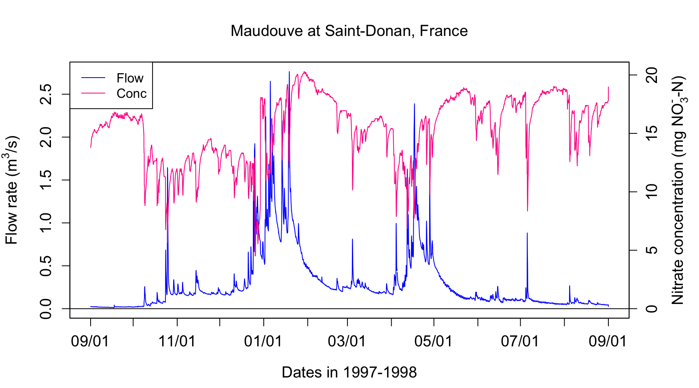
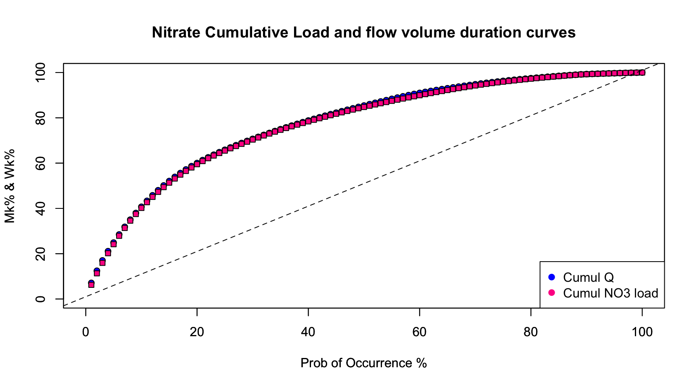
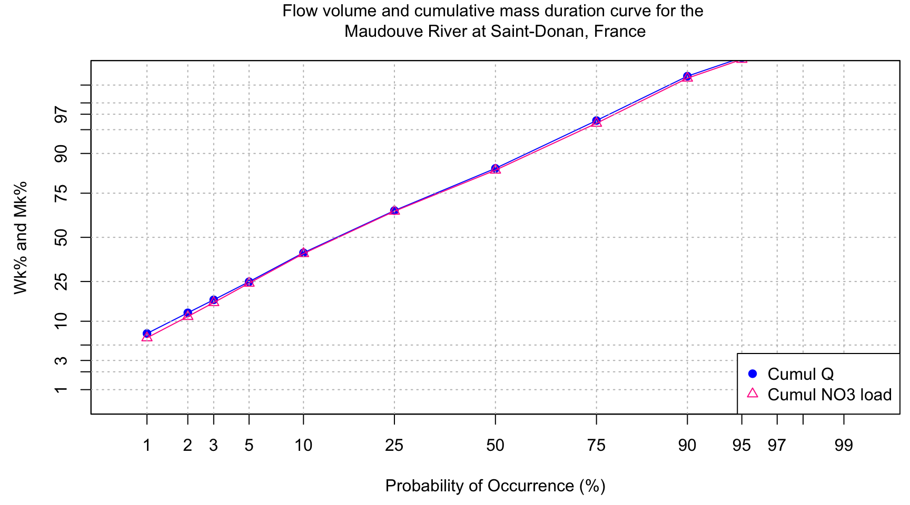

started 2011-09-11 and updated 2021-02-15
Lately, we have been researching and developing techniques of analyzing continuous water quality and hydrology data in order to explain hydrological and biogeochemical processes controlling stream chemistry in watersheds. One of the techniques in which we have applied to an entire year of water quality and hydrology data is a method that assesses how relatively reactive nutrient/sediment loading is to flow and the relative flashiness of a watershed. This method, referred to as load and flow duration curves, determines the percentages of the total load or Mass (Mk%) and volume of Water (Wk%) that occur in a percentage of the total sampling time, termed probability of occurrence.
Mk% and Wk% duration curves can be plotted as a function of the probability of occurrence, which provides an interesting way of demonstrating how loading relates to flow and varies among water quality constituents. This method can also be applied to individual storm events to assess if there is a first flush response.
There are lots of great new (in 2017) plotting tools in R, such as ggplot, qqplot, or plotly. These tools have developped to manipulate data as function of factors, parameter, etc. But as far as we can tell, they are not well designed for handling time series of different units. This is too bad because they are otherwise rather attractive. As a result, for continuous flow and concentration data, we are still forced to use the more basic R graphics. But maybe me are missing something. In the meantime, it is important to be able to have some basic knowledge on how to plot continuous hydrographs and chemographs.
In the code below, we have added quite a bit of comments to explain what code line does what.
data<-read.csv(file="https://raw.githubusercontent.com/francoisbirgand/francoisbirgand.github.io/master/data/sample_1hr_QC_data.csv",header = TRUE) #Reads file into table format
WSarea<-24.2 #Area of watershed in km2
WS<-"Maudouve at Saint-Donan, France"
names(data)=c("datetime","Q","C") # renames the columns in simpler names
data<-as.data.frame(data)
data$datetime<-as.POSIXct(strptime(data$datetime, "%Y-%m-%d %H:%M:%S")) # transforms characters into date values understood by R
D<-data$datetime
Q<-data$Q #Defines Q as the flow value (m3/s)
C<-data$C #Defines C as the Concentration value (mg NO3-N/L)
L<-Q*C
N=nrow(data) #Sets N to the value equal to the number of total rows in the table
# definition of the x and y axes limits
xlim = as.POSIXct(c(D[1],D[N])) # this renders the first and last date understandable for plotting purposes
ylimQ = c(0,max(Q)) # ylim for flow
ylimC = c(0,max(C)) # ylim for concentrations
ScaleF = 1.2 # scaling factor for size of fonts and other things
y1lab<-expression("Flow rate (" * m^3 * "/s)") # defines the label for flow
y2lab<-substitute(paste("Nitrate concentration (mg ",NO[x]^{y},"-N)",sep=""),list(x=3,y="-")) # defines the label for concentrations
par(mar=c(4.5,4.5,4,4.5)) # defines the sizes, in number of lines, for the margins (bottom, left, top, right)
ltyp=c(1,2)
plot(D,Q,col="blue",type="l",cex=0.1,yaxt="n",
lty=ltyp[1],xaxt="n",xlab="",ylab="",xlim=xlim,ylim=ylimQ)
# we are taking all the default addition of axis tick marks and numbers out by using xaxt and yaxt = "n"
# and setting the axis labels at nothing using xlab = "" and ylab = ""
abline(h=0)
axis.POSIXct(1, at=seq(D[1], D[N], by="month"), format="%m/%d",cex.axis=ScaleF)
# this tells R that we want the X axis ticks and values to be displayed as dates, be added on a monthly basis,
# using the month/day format
axis(2,cex.axis=ScaleF)
# this tells R that the first Y axis ticks can be displayed (that function was repressed earlier by 'yaxt="n" ')
par(new=TRUE)
# this tells R that a new plot has already been opened, in other words you are telling R to keep adding things
# on the existing plot
ColElmt="deeppink1"
plot(D,C,col=ColElmt,type="l",cex=0.1,yaxt="n",
lty=ltyp[1],xaxt="n",xlab="",ylab="",xlim=xlim,ylim=ylimC)
# plots the concentration data
axis(4,cex.axis=ScaleF)
# this tells R that the second Y axis ticks can be displayed (that function was repressed earlier by 'yaxt="n" ')
par(new=TRUE)
mtext("Dates in 1997-1998",side=1,line=3,cex=ScaleF) # add in the margin the defined labels and title
mtext(y1lab,side=2,line=3,cex=ScaleF)
mtext(y2lab,side=4,line=3,cex=ScaleF)
mtext(WS,side=3,line=1.5,cex=ScaleF)
legend("topleft",c("Flow","Conc"),lty = c(1,1), col = c("blue",ColElmt))
Flow duration curves represent the percentage of the total flow that occurred in x% of the time corresponding to the highest flows. The same applies for loads. This might sound a bit merky, but hopefully it will not with the further explanations below. To get there, one first needs to order flow and loads in descending order.
QSort=sort(Q,decreasing = TRUE) #Sorts instantaneous flow rates in descending order
LSort=sort(L,decreasing = TRUE) #Sorts instantaneous flux values in descending orderThe blue hydrograph from above now becomes:
par(mar=c(4.5,4.5,1,1))
plot(QSort,col="blue",type="l",cex=0.1,yaxt="n",
lty=ltyp[1],xaxt="n",xlab="",ylab="",ylim=ylimQ)
abline(h=0)
axis(2,cex.axis=ScaleF)
mtext(y1lab,side=2,line=3,cex=ScaleF)
mtext("Cumulative number of flow values",side=1,line=3,cex=ScaleF)
legend("topright",c("Sorted Flow"),lty = c(1), col = c("blue"))
The next thing to do is to integrate under the sorted curves to obtain the cumulative flow as a function for each represented flow value. To do this, there is a really nice way to calculate this using the cumcum() function as below. All values are put in percentage values
cumQSort<-c(0,(cumsum(QSort[-1])+cumsum(head(QSort,-1)))/2)
cumQSort<-cumQSort/tail(cumQSort,1)*100
cumLSort<-c(0,(cumsum(LSort[-1])+cumsum(head(LSort,-1)))/2)
cumLSort<-cumLSort/tail(cumLSort,1)*100So now the cumulative flow volume curve corresponding to the highest flow rates as a function of the cumulative number of flow values looks like this:
par(mar=c(4.5,5.5,1,1))
plot(cumQSort,col="blue",type="l",cex=0.1,yaxt="n",
lty=ltyp[1],xaxt="n",xlab="",ylab="", ylim=c(0,100))
abline(h=0)
axis(2,cex.axis=ScaleF)
mtext("Cumulative number of flow values",side=1,line=1,cex=ScaleF)
mtext("%age of cumulative flow corresponding to\n the highest sorted flow rates ",side=2,line=3,cex=ScaleF) # the \n in the text allows for line break in the titleNotice that there is still no unit added for x axis because I decided that the cumulative number of flow value does not really add a lot to the analysis. However, it becomes very interesting to transform these values in probability of occurence. Each value has 1/N the probability to occur. We can also calculate the cumulative probability of occurence of flow values. Flow and load duration curves are thus derived this way.
In more details, the cumulative discharge calculated at each instantaneous flow rate can be calculated as a percentage of the total discharge yielding Wk% values corresponding to the kth cumulative probability and the time elapsed at each point can be calculated as a percentage of the total time. This works because even though flow rates are rearranged, the same amount of data points exist within the dataset with the same time increment occurring between each value. Wk% values can then be plotted as a function of the percentage of the total time. This is what is referred to as Flow Duration Curves. This provides a way of demonstrating of how relatively flashy the watershed may be, either relatively to other watersheds or to previous years.
The flashiness of a watershed refers to how rapidly flow is altered as a result of storm events/varying conditions. More frequent spikes in flow in response to precipitation events, in which flow increases and decreases more greatly and rapidly, are typically indicative of watersheds with predominant portions of streamflow being influenced by surface runoff, a quicker responding contributor of water to streamflow.
Wk=quantile(cumQSort,probs=seq(0.01,1,0.01))/tail(cumQSort,1) #Calculates and assigns Wk% values to a probability occurring in 1-100% of the total time
Mk=quantile(cumLSort,probs=seq(0.01,1,0.01))/tail(cumLSort,1)This method allows us to see the percentage of the total discharge that occurs in a fraction of the total time with the lowest probabilities of occurrence corresponding with the highest flow rates associated with event flow. Therefore, if one watershed produces a majority of the total discharge in 50% of the time versus a watershed that produces a majority of the total discharge in 80% of the time, that watershed may be considered relatively flashier because a greater portion of the total discharge occurs in association with higher flow rates. In other words, streamflow would be considered more reactive to event water because the event hydrograph rises and recedes more quickly than the other watershed. This quick rise and recession allows for most flow to occur in a smaller percentage of the time versus the watershed that has a much wider event hydrograph spanning across a greater range of instantaneous flow values over a greater period of time. Visually, this method can provide a relative comparison of the flashiness of multiple watersheds. In the example above, the shape of the curve in the first watershed would have a greater slope towards the lower percentages/probabilities of occurrence and the curve for the second watershed would be somewhat flatter.
xlim=c(0,100);ylim=c(0,100);
plot(1:100,Wk*100,xlab="Prob of Occurrence %",ylab="Mk% & Wk%",xlim=xlim,ylim=ylim,pch=21,col="black",bg="blue")
par(new=TRUE)
plot(1:100,Mk*100,xlab="Prob of Occurrence %",ylab="Mk% & Wk%",xlim=xlim,ylim=ylim,pch=22,col="black",bg=ColElmt)
par(new=TRUE)
abline(1,1,xlab="Prob of Occurrence %",ylab="Mk% & Wk",col="black",lty="dashed",xlim=xlim,ylim=ylim)
par(new=TRUE)
legend("bottomright",c("Cumul Q","Cumul NO3 load"),
pch=c(19,19),
col=c("blue",ColElmt),
bg="white")
title(main="Nitrate Load and flow duration curves") # the \n in the text allows for line break in the title
#Code for plotting the double cumulative plot using the normal distribution probabilities to zoom in on the lower tails
v<-c(1,2,3,5,10,25,50,75,90,95,97,98,99,100) #v is a set of user defined values of percentages of the total time to be used for calculating and plotting specific corresponding Wk% and Mk% values
x<-v/100 #Sets x as values of v in percentages
y<-Mk[v] #Sets y as the set of Mk% values corresponding with percentages of the total time defined by values in x
xx<-qnorm(x) #qnorm takes a given probability (x values in this case) and returns the corresponding cumulative distribution value (Z-score) based on a normal distribution curve
yy<-qnorm(y) #Here, qnorm is taking the percentages of the load that occur associated with percentages of the total time defined by values in x and calculating associated Z-scores according to a normal distribution curve
yV<-Wk[v] #Sets yV as the set of Wk% values corresponding with percentages of the total time defined by values in x
yyV<-qnorm(yV) #qnorm takes percentages of the flow occurring associated with percentages of the total time defined by x values and assigns Z-score values to each probability based on the normal distribution curve
yy<-cbind(yy,yyV) #Binds both sets of Z-score values corresponding with Mk% (yy) and Wk% (yV)
xx<-cbind(xx,xx) #Binds both sets of Z-scores correspdonding with defined percentages of the total time (They are the same, this is for plotting purposes)
color<-c(ColElmt,"blue") #Defines the plot colors for yy and yV
for (i in 1:2){
plot(xx[,i],yy[,i],xlab="Probability of Occurrence (%)",ylab="Mk% & Wk%",type="o",xaxt="n",yaxt="n",xlim=c(-2.5,2.5),ylim=c(-2.5,2.5),pch=i,col=color[i])#Plots yy and yV values as a function of xx values
par(new=TRUE)
}
axis(1,at=xx[,1],labels=x*100)
axis(2,at=xx[,1],labels=x*100)
title(main="Double cumulative probability plot for nitrate load \nand for flow volume") # the \n in the text allows for line break in the title
abline(h=xx,lty=3,col="grey") #Plots gridlines
abline(v=xx,lty=3,col="grey")
legend("bottomright",c("Cumul NO3 load","Cumul Q"),
pch=1:2,
col=color,
bg="white")
Once again, the cumulative load calculated at each instantaneous flux value can be calculated as a percentage of the total load yielding Mk% values and the time elapsed at each point can be calculated as a percentage of the total time. Mk% and Wk% values can be plotted as functions of the probability of occurrence and multiple Mk% curves for various water quality components can be plotted simultaneously for comparison of loading as a function of probability of occurrence. For example, 50% of the nitrate load may be exported in 25% of the time whereas 50% of the ammonium load may be exported in only 5% of the time. The interaction of flow and concentrations could be examined further to explain differences among loading and flashiness of concentrations with event flow.
With the above plot, we see that the Maudouve River at Saint-Donan in 1997-1998 is not very flashy as only 10% of the flow occurs in 2% of the time. Some watersheds are a lot flashier and can export more than 25% of the flow volume in 2% of the time. We can also see that there is a very slight difference between the flow and the load duration curves, with the load duration tending to be a bit lower. This is due to the “dilution” effect of nitrate concentrations during flow events: nitrate concentrations exhibit troughs during flow peaks.
It is helpful to use the qnorm function in R to zoom in on the very low and high probabilities of occurrence, or on the tails of the normal distribution curve.